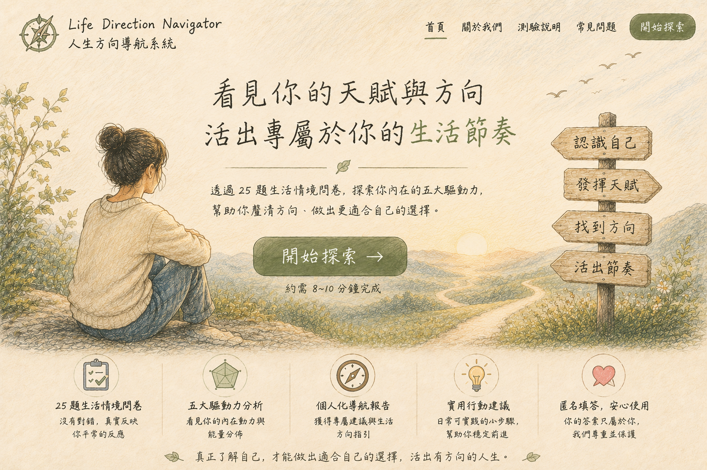

免費版

這是一段幫你重新看見生活節奏與內在動力的小探索。它不替你算命，也不替你決定人生，而是陪你整理目前更像自己的方向。
你會回答 25 個生活情境題，每題只需要用滑桿表示像不像你。
完成後，你會看到目前最明顯的主驅動力，以及下一步可以怎麼開始。
第 1 題 / 25 題
已準備
生活情境
請回想自己平常工作的樣子，依照最自然的反應回答即可。
免費版結果
先看見現在最明顯的方向感。
結果整理中。
先選一個最小行動，讓生活回饋你，而不是一次逼自己做完所有決定。
這份結果不是要替你決定人生，而是幫你先看見自己的傾向。接下來，你可以先選一個最容易開始的小行動，觀察自己這一週在哪些時刻最有能量。
使用回饋
回饋會先儲存在這台裝置。
體驗完成
你的回饋會幫助我們把 Life Direction Navigator 做得更清楚、更貼近真實使用者。
完整版將提供更完整的分析與可長期保存的方向整理：